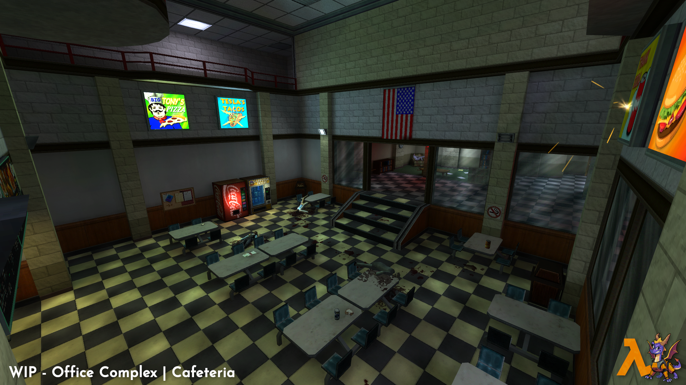
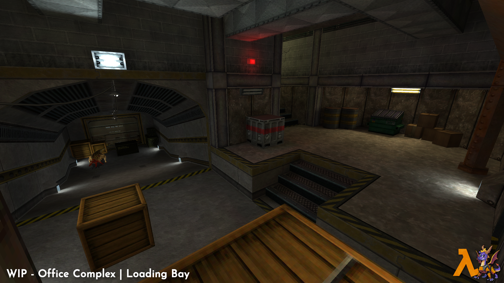
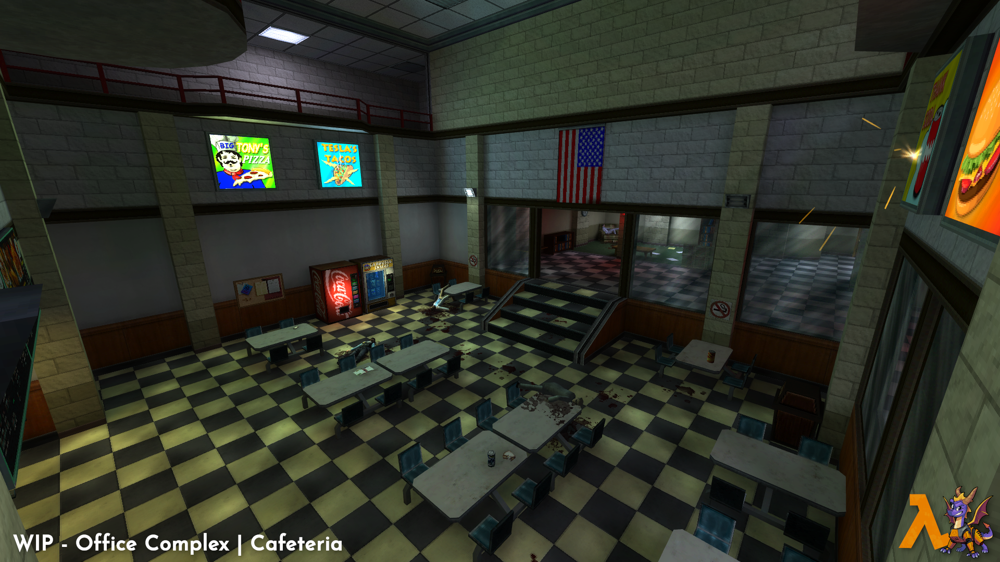
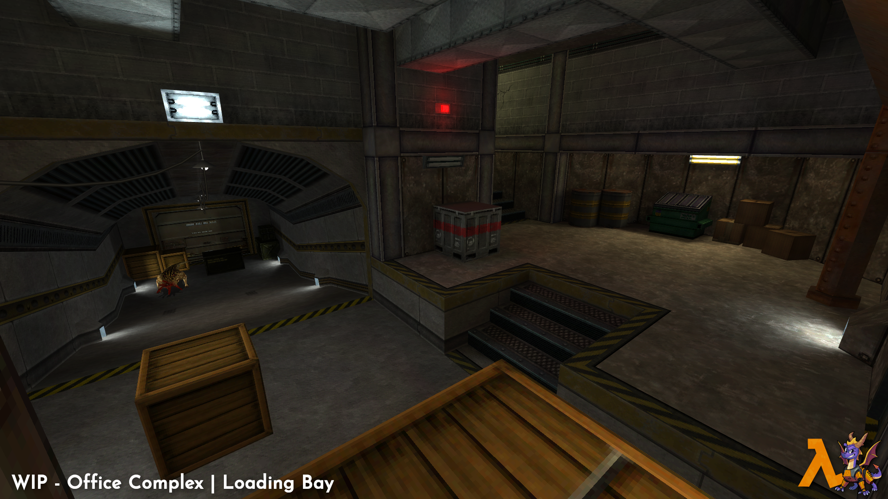

HALF-LIFE
Year of the dragon is a crossover mod that brings the world of Spyro the Dragon to the Half-Life universe!
 



CHARGE • THINK • FLAME • LIVE
Progress Update 5: MOTY Edition
So 2020 has been one hell of a year, hasn't it? Really changed my plans for this year. Both in my personal life, and with the mods I’m working on. I wanted to give everyone an update on what's been going on because the plans from the last article have indeed changed. Let's get to it!
The calendar was a lie!
Well, it wasn’t at first to my defense! Anyways, that little image I made showing the release of the next demo and the SDK has for sure fallen through the cracks. I’d say the current pandemic is a result of that. While the virus has led to many people being unemployed, working from home, or giving them a chance to catch a break, it’s done none of that to me. I actually gained extra hours and was busier than ever from Match to the end of July. That obviously gave me little time to work on the mod. On top of that I was starting to get that burnt out feeling which isn’t a good sign, It led me to continue work on Preliminary and make a new video series called The Monster Files.

(This is probably how everyone feels right now.)
Since then I have gotten the urge to work on it once again so I guess everything worked out in the end! I don’t want to make another calendar just yet but I do want to get the next demo out sometime in 2021. Hopefully the world hasn’t destroyed itself by then!
Things are still happening!
While there isn’t a release happening this year, there has still been plenty of progress! For those who follow my Twitter, you would have seen several wip videos, and images that weren’t ever posted here. I just recently compiled all of the progress made this year, and put it into a video:
I also started working on the new and improved Office Complex chapter to go along with the Uplink demo that’s in the works. I have essentially stopped using the map sources I got for the original demo, and am now updating everything to a higher graphical fidelity, and reworking the levels with Spyro’s moveset in mind, and the 3rd person camera.


(New Office Complex screenshots.)
Along with this chapter will be Uplink as mentioned above and in the previous article. Stay tuned to see some screens for that chapter to pop up in the near future! Along with level shots, I also got some renders showing off the new ‘standard definition’ Spyro mesh which is a hand made retopology based off the Reignited mesh, along with its own textures. The cheat code colors have made a return for this new model as well.


And for what is probably the most important render of them all, I finally made a HEV suit for our purple boy, rigged, texture, and ready to go! The functionality of the suit is still being decided, but you will see it in the next demo!
Wrapping up!
I’d like to thank everyone for the love and support so far! I always say that but without the love from fans I probably would have canned this by now. If you want to follow me on some social media I have a Discord and Twitter linked below. I also have a PayPal for any donations you feel like sending my way. I also have a YouTube where I make videos, and stream. Anyways, until next time!
The adventure continues...